复数
【数的概念扩充的原则】
(1) 增添了新的元素.
(2) 新旧元素在一起构成新的数集.在新的数集里，定义一些基本关系和运算，使原有的一些主要性质(如运算定律) 仍旧能够适用.
(3) 旧元素作为新的数集里的元素，原有的运算关系仍然保持.
(4) 新的数集解决了旧的数集所不能解决的矛盾.
例 说明由非负有理数集，扩充到有理数集是遵循了数的概念扩充的原则.
答
①由非负有理数集添加负数后，扩充到有理数集，因此新数集增添了新元素.
②非负有理数集中的所有元素与新增添的所有负数合在一起构成了有理数集.在有理数集中我们对两个有理数的相等和不等作了规定(两个负数如果它们的绝对值相等，就算作是相等的数；每一负数都小于零，也小于任意的正数；在两个负数里，绝对值大的那一个数较小，绝对值小的那一个数较大)，在这一规定下，非负有理数集的顺序律仍能适用.我们还规定了有理数集中加、减、乘、除的运算法则，在这一规定下，非负有理数集的运算律仍然适用.
③非负有理数集中的数就是有理数集中的正数，原数集中的加、减、乘、除运算是有理数集中加、减、乘、除运算的特殊情况(即两个正数运算的情况)，故原来数集的运算关系仍然保持.
④在有理数集中减法永远可以进行，解决了非负有理数集中被减数小于减数时不能解决的问题.
由以上四点可知，在由非负有理数集扩充到有理数集时遵循了数的概念扩充的原则.
说明: 数集扩充的原则不在教学要求之内，但是让学生了解一下此原则可增强学生学习复数一章内容的自觉性.
在学习复数之前，把过去所学过的数的概念认真做一总结很有必要，通过以前所学数的概念发展过程的总结，使学生了解数集扩充的原则，特别是对于从自然数集扩充到正有理数集和从非负有理数集扩充到有理数集这两次数集的扩充，可以介绍地更详细一些.因为这两次数集的扩充是完成实数集的两个重要阶段，学生学习时就是遵循数集扩充的原则进行的，同时这两次数集的扩充所引进的运算法则是实数运算的基础学生比较熟悉，容易透过这两次数集的扩充，理解数集扩充的原则，并在此基础上使学生对实数集需要再一次扩充的必要性有一个认识，同时也了解数集扩充都需要做哪些工作，以便自觉主动地学好复数这一章.
【虚数单位】
数i 称为虚数单位，它具有两条性质(1) i2＝－1；(2) 实数与i 进行四则运算时，原有的加、乘运算律仍然成立.
例 已知m、n 是整数，i3m－in＝im＋in＝0，
求im2，im＋n的值.
解∵i3m＝in，
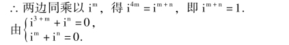
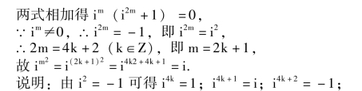
i4k＋3＝－i (k∈Z).这个性质称为i 的乘方运算的周期性.
【纯虚数】
形如bi (b 是不等于零的实数) 的数叫做纯虚数.例如:
【复数】
形如a ＋bi (a、b∈R) 的数叫做复数.当b ＝0 时就是实数；b≠0 时叫做虚数；当a≠0，b≠0 时是纯虚数.a 叫做复数的实部，b 叫做复数的虚部.全体复数构成的集合叫做复数集，用字母C 表示.
例 m 取何实数值时，(m2－4m －21) ＋ (m2＋5m＋6) i，①是实数；②是虚数；③是纯虚数；④是零.
解 所给复数可变形为(m ＋3) (m －7) ＋ (m ＋3) (m ＋2) i，
①当(m ＋3) (m ＋2) ＝0 时，即m ＝－3 或m ＝－2 时，所给复数是实数.
②当(m ＋3) (m ＋2) ≠0 时，即m≠－3 且m≠－2 时，所给复数是虚数.
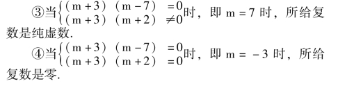
【复数的相等】
如果两个复数a ＋bi 与c ＋di 的实部和虚部分别相等，我们就规定这两个复数相等，记作a ＋bi ＝c ＋di.即如果a、b、c、d∈R，那么
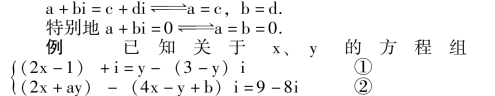
有实数解，求实数a、b 的值.
解 ∵x、y 是实数，根据复数相等的条件由方程①得
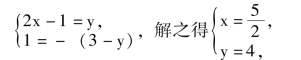
代入方程②得(5 ＋4a) － (6 ＋b) i ＝9 －8i，
∵a、b∈R，根据复数相等的条件得
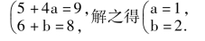
【复平面】
用坐标平面内的点Z 来表示复数z ＝a ＋bi，这个点的横坐标是a，纵坐标是b，这个坐标平面叫做复平面.x轴叫做实轴，y 轴叫做虚轴(虚轴不包括原点，原点在实轴上，表示实数零).复数和复平面内的点一一对应.
【共轭复数】
当两个复数实部相等，虚部互为相反数时，这两个复数叫做互为共轭复数.复数z 的共轭复数记为
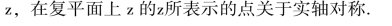
【共轭虚数】
两个复数互为共轭复数，当虚部不等于零时，也叫做共轭虚数.
例 已知z1＝ (xy ＋5x －26) ＋ (10x －3y －16) i，z2 ＝ (xy－6y) ＋ (y2 ＋3y) i，问当x、y 取何实数值时z1、z2为共轭复数?
解由共轭复数概念得
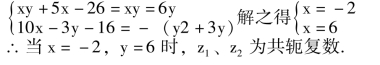
【共轭复数的运算性质】
说明: 共轭复数的运算性质，在教学中可放在复数运算中讲.
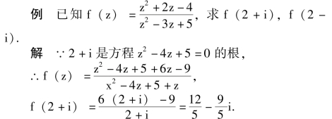
说明: 两个共轭复数的和与积都是实数，所以根据韦达定理2 ＋i，2 －i 必是实系数二次方程z2－4z ＋5 ＝0 的二根，故2 ＋i 使得式子z2－4z ＋5 为零，因而简化了运算.
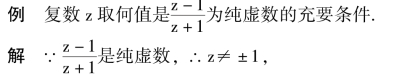
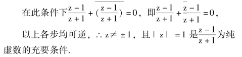
【向量】
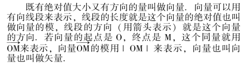
【零向量】
若向量的起点与终点重合，即长度为零的向量(它的方向可以是任意的) 叫做零向量.规定所有的零相量都相等.
【向量的相等】
如果两个向量模相等且方向相同就说这两个向量相等.
说明: (1) 对两个向量方向相同，应理解为两个向量在同一直线上且指向相同，或两个向量所在直线平行且指向相同.
(2) 两个向量相等与这两个向量的起点无关，即两个向量相等并不要求有相同的起点和终点，但是总可以经过平行移动(保持向量的长度和方向不变) 使得它们有共同的起点和终点，即使两个向量完全重合.
【自由向量】
如果一个向量只考虑其长度和方向而不考虑其起点位置如何，这样的向量叫做自由向量，由向量相等的定义可知，保持长度和方向不变的一切自由向量都是相等的.
【位置向量】
由原点出发的向量叫做位置向量.
【复数的向量表示】
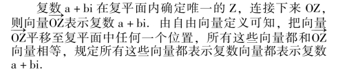
说明: (1) 从原点出发的向量所表示的复数，与该向量的终点在复平面内所表示的复数是一致的.
(2) 起点不在原点的向量所表示的复数，与该向量的终点在复平面内所表示的复数不一致.而该向量所表示的复数是把这个向量平移至起点在原点后，其终点在复平面内所表示的复数.
(3) 给定复平面内的一个向量对应一个复数，而给定一个复数在复平面内对应无数多个向量.
(4) 复平面内所有以原点为起点的向量所成的集合与复数集之间是一一对应的.
【复数的模】
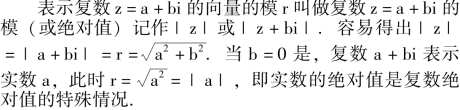
【复数模的运算性质】
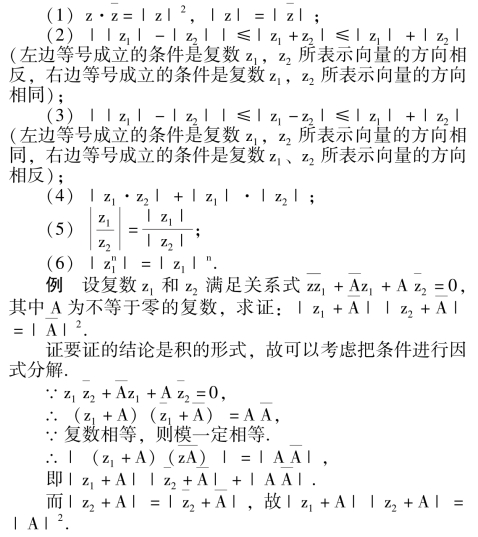
【复数的辐角】
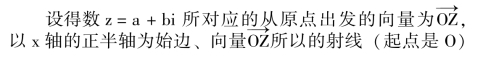
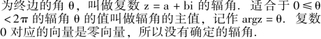
【复数的三角形式】
从图1 －14 中可以看出:
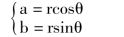
任何一个复数z ＝a ＋bi 都可以写成r (cosθ ＋isinθ)的形式，其中r 是复数的模，θ 是复数的辐角.r (cosθ ＋isinθ) 叫做复数a ＋bi 的三角形式，为了区别复数的三角形式，a ＋bi 叫做复数的代数形式.
【复数的指数形式】
为了表达简便，我们把模为r，辐角为θ (以弧度为单位) 的复数表示成reiθ 的形式，叫做复数的指数形式.
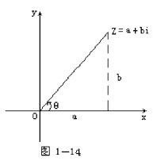
【复数加、减法的法则】
两个复数相加(减)，只需把它们的实部与实部、虚部与虚部分别相加(减)，即
(a ＋bi) ± (c ＋di) ＝ (a±c) ＋ (b±d) i.
【复数加法的几何意义】
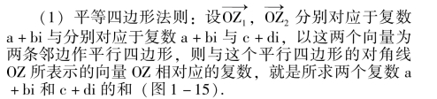
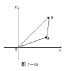
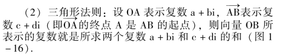
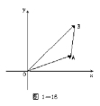
【复数减法的几何意义】
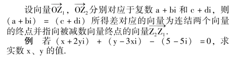
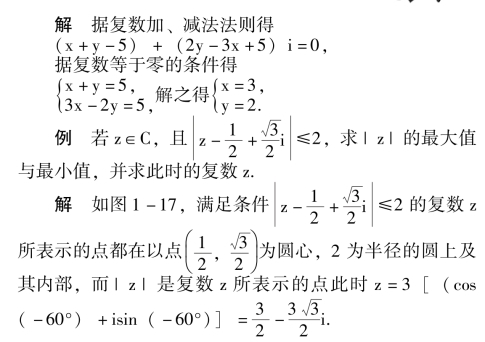
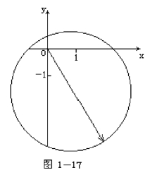
到原点的距离，由图可知｜z ｜的最小值为零，此时z＝0；｜z ｜的最大值为3。
例 已知复平面内一个等腰三角形，顶点表示复数4＋2i 底边一个端点表示复数3 ＋5i，求另一个端点的轨迹方程.
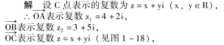
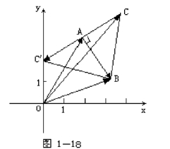
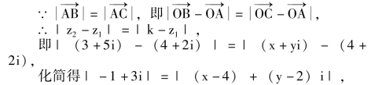
∴ (x－4)2＋ (y－2)2＝10 (去掉复数3 ＋5i 和5 －i所表示的点).
说明: 根据复数减法的几何意义和复数模的概念可以得到复平面上两点间的距离公式.设A、B 两点所表示的复数为z1、z2，则A、B 两点间的距离为｜AB ｜ ＝｜z2－z1｜.
【复数乘法的法则】
复数乘法可按多项式乘法法则进行，在所得结果中，把i2换成－1，并把实部与虚部分别合并，即(a ＋bi)(c ＋di) ＝ (ac －bd) ＋ (bc ＋ad) i.由复数代数式的乘法法则导出复数三角形式的乘法法则为
r1(cosθ1＋isinθ1) ·r2(cosθ2＋isinθ2)
＝r1r2[cos (θ1＋θ2) ＋isin (θ1＋θ2)] 即两个复数相乘，积的模等于各复数的模的积，积的辐角等于各复数的辐角的和.
【复数乘法的几何意义】
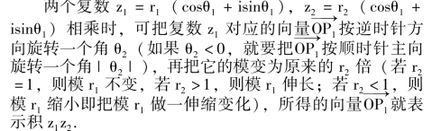
例 复平面内二点A、B 代表复数2 ＋3i 和3 ＋i，求以A 为直角顶的等腰直角三角形第三个顶点C 代表的复数.
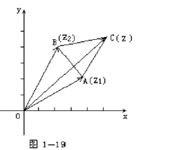
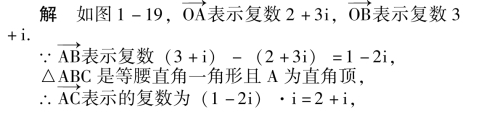
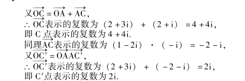
例 已知M 是抛物线y2＝2x 上一动点，另有定点A(4，0).连AM，若以A 为中心将AM 按顺时针方向旋转90°到AN，求N 点的轨迹.
解 设N 点表示复数x ＋yi (x、y∈R)，如图1 －20，
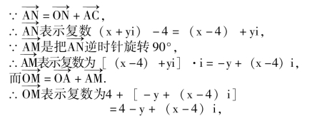
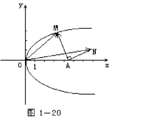
即M 点表示的复数为4 －y ＋ (x－4) i，
∵M 点在抛物线y2＝2x 上，
∴N 点的轨迹方程为(x －4)2＝8 －2y，其轨迹是顶点为(4，4)，对称轴方程为x ＝4，开口向下的抛物线.
说明: (1) 在解析几何中遇到图形旋转的问题时，经常考虑利用复数解决问题较为简便.
(2) 在利用复数乘法的几何意义处理向量旋转的问题时，只须把向量所表示的复数乘以cosθ ＋isinθ 即可达到使向量逆时针旋转θ 角的目的(当θ 取负值时就是顺时针旋转)，而并不要求向量的起点在原点.(3) 识别向量表示和复数与其中点所示的复数是否一致的标准是看向量的起点是否在原点，即当向量的起点在原点时，向量所表示的复数与终点所表示的复数是一致的，否则将不一致.
【复数除法的法则】
两个复数相除，可以先把它们的商写成分式，然后把分子、分母都乘以分母的共轭复数，并把结果化简，即
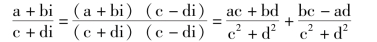
利用复数代数式的除法法则容易导出复数三角形式的除法法则
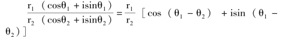
即两个复数相除，商的模等于被除数的模除以除数的模所得的商，商的辐角等于被除数的辐角减去除数的辐角所得的差.
【复数除法的几何意义】
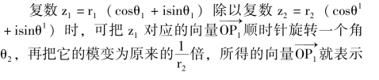
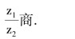
【复数乘方的法则】
当n 是正整数时，复数的n 次幂的模等于这个复数的模的n 次幂，它的辐角等于这个复数的辐角的n 倍.复数乘方的这一法则也叫做棣莫弗定理.
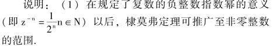
(2) 在学习了二项式定理后，在n 是正整数时，(a＋bi)n也可利用二项展开式计算得到，计算虽然麻烦一点，但在复数a ＋bi 的辐角不是特殊值时，其乘方结果的表达是比较简单的.
例 求使等式(1 ＋i)n＝ (1 －i)n·i15成立的最小的自然数n.
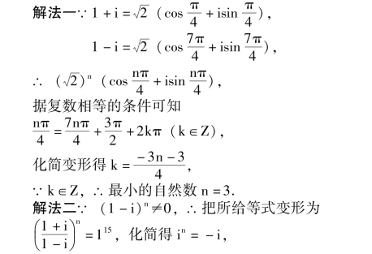
∴使等式成立的最小自然数n ＝3.
【复数开方的法则】
复数的n 次方根有n 个值，它们的模都等于这个复数的模的n 次算术根，它们的辐角分别等于这个复数的辐角与2π 的0，1，…，n －1 倍的和的n 分之一.即复数r(cosθ ＋isinθ) 的n 次方根是
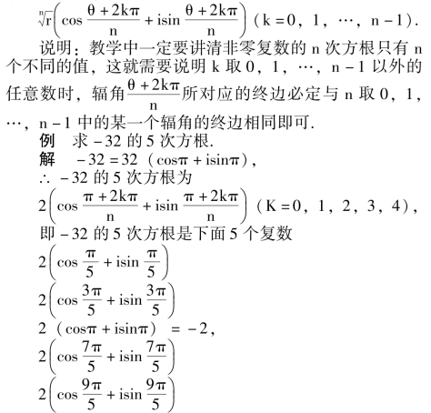
说明: (1) 复数化为三角形式时并不要求辐角一定取主值，但如果θ 取为辐角主值，则用公式得到的n 个n次方根所表示的辐角都在主值范围内，故习惯上把复数化为三角形式时，辐角取在主值范围内.
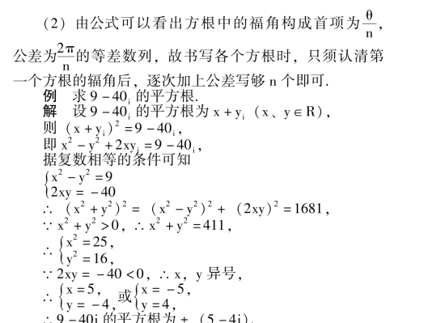
说明: 复数9 －40i 的辐角不是特殊值，故化为三角形式求平方根较繁杂，且结果表达也复杂，所以这里借助复数代数式的平方运算和复数相等的条件求出平方根，便受解方程知识的限制，此法只能解决平方根的运算.
【复数开方的几何意义】
由复数r (cosθ ＋isinθ) 开n 次方所得的结果可知，这n 个方根所表示的点均匀公布在以原点为圆心，所nr为半径的圆上，构成了一个正n 边形的n 个顶点.
【二项方程】
形如anxn＋a0＝0 (a0，anCc，且an≠0) 的方程叫做二项方程.任何一个二项方程都可以化成xn＝b (b∈C)的形式，因此都可以通过复数开方来求根.